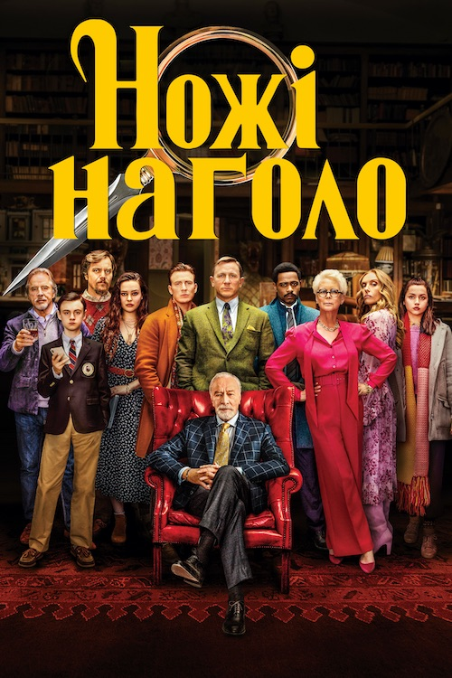

Гнів людський
художній фільм у жанрі бойовика і трилера, сценаристом і режисером якого є Гай Річі. Сюжет фільму заснований на французькому фільмі Інкасатор 2004 року режисера Ніколя Букрієфа.
Операція «Фортуна»: Мистецтво перемагати
художній фільм Гая Річі у жанрі шпигунського трилера, зйомки якого почалися восени 2020 року. У головній ролі Джейсон Стейтем.
Ножі наголо: Скляна цибуля
детективний фільм режисера та сценариста Раяна Джонсона з Денієлом Крейґом у головній ролі.

Ножі наголо
американська неонуарна чорна детективна кінокомедія 2019 року сценариста і режисера Раяна Джонсона.